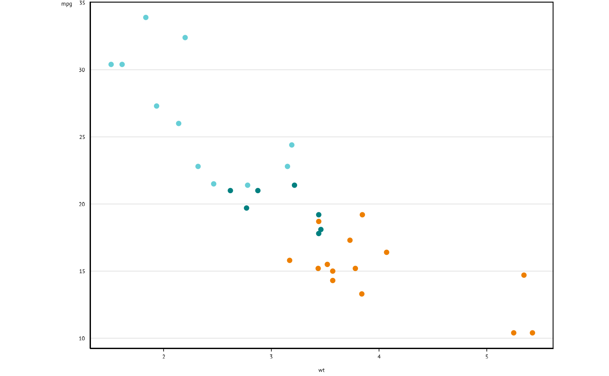

The colour and fill scales are designed for discrete scales. If the data are
continuous, we recommend binning the data as this often makes it easier to
distinguish between values than a continuous scale. If a continuous scale is
desired, the discrete argument can be set to FALSE.
Arguments
- reverse
Logical. TRUE reverses the colour order. Defaults to FALSE.
- discrete
Logical. Indicate whether to use a discrete scale. Defaults to TRUE.
- palette
Character. The specific e61 palette for continuous scales. Must be supplied if a continuous scale is used.
- n
![[Deprecated]](figures/lifecycle-deprecated.svg) n is no longer used.
n is no longer used.- ...
Arguments passed on to
ggplot2::scale_colour_manualvaluesa set of aesthetic values to map data values to. The values will be matched in order (usually alphabetical) with the limits of the scale, or with
breaksif provided. If this is a named vector, then the values will be matched based on the names instead. Data values that don't match will be givenna.value.aestheticsCharacter string or vector of character strings listing the name(s) of the aesthetic(s) that this scale works with. This can be useful, for example, to apply colour settings to the
colourandfillaesthetics at the same time, viaaesthetics = c("colour", "fill").breaksOne of:
NULLfor no breakswaiver()for the default breaks (the scale limits)A character vector of breaks
A function that takes the limits as input and returns breaks as output
na.valueThe aesthetic value to use for missing (
NA) values
Examples
ggplot(data = mtcars, aes(x = wt, y = mpg, col = factor(cyl))) +
geom_point() +
scale_colour_e61() +
theme_e61()
